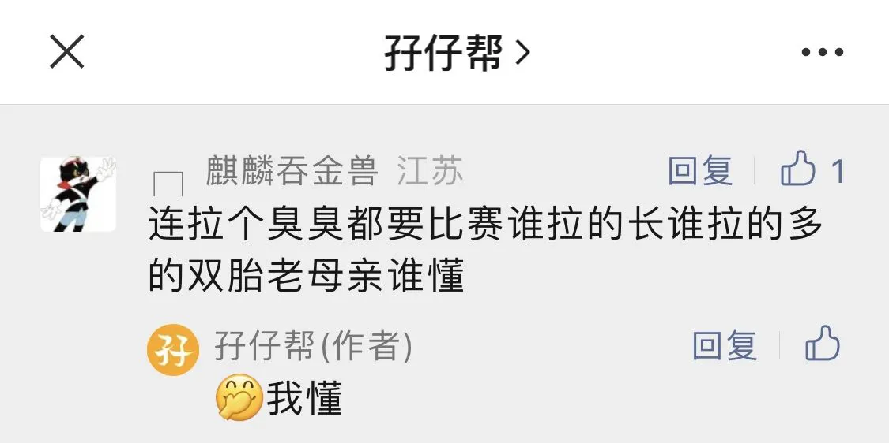

孖仔帮
公众号ID：twinsbang
关注
文|圆圈妈妈
网图|侵删
上一篇《双胞胎这10大特色，你家肯定都有！》有一则留言，很搞笑。

老母亲表示，这画面感太辣眼了，竟然深有同感呐！
圆圈兄弟，2岁半那会儿，刚戒掉尿不湿，他们对自己能站着嘘嘘这个技能，惊喜激动，充满好奇，又很有成就感，仿佛刚刚拯救了全宇宙似的，雄赳赳。
那时候，不管是阳台上、客厅里，还是门缝处，到处都能看到他们留下的小水坑，唯独厕所是片干爽的绿洲。
可最让人哭笑不得的是，他们可不止于此，开始竞赛谁的尿尿多，谁能嘘得更远。
我时常可以看到两个光着屁股的男小孩，站在两滩尿水中，交头接耳地商量着天大的秘密，就是哪一滩尿更壮观，争论个上午，一泡尿没等干就又来两泡。
以上只是冰山一角....
双胞胎之间经常暗自较劲，啥都比，啥都争，好像是内置竞争模式，不管是吃饭、穿衣、玩玩具，都得比一比，天天嘚瑟个没完没了，就怕你想不到，没有他们办不到。
比如以下这些，全是圆圈兄弟经历过的。
成绩大比拼
圆圈兄弟现在三年级，学校成绩是个永恒的话题，他们俩总是想知道谁在数学、科学或者英语考试中表现得更好。
有时候，这竟然变成了晚饭桌上的热门话题！每次吃饭都会围绕当天的生字听写，测验卷子，课堂表现...争得面红耳赤，不管输赢，到最后势必会有一场筷子和勺子之间的混战。
运动角逐
无论是在学校的比赛还是家里的小赛事，他们都要一较高下，看谁跑得更快、跳得更高、踢球更远...
圆圈兄弟有天天跳绳的习惯，一次跳三组，每当轮到圆圆跳的时候，圈圈简直就像被施了定身术一样，专心盯着圆圆看，只要圆圆比他多跳了，哪怕只是多了1下，圈圈就开始怨天尤人，怒甩绳子，感觉人生都毁了，等到下一组赢过圆圆了，他才能冷静下来，恢复稳定的情绪。
身高较量
小时候的圆圈兄弟俩经常站在一起，背对背比来比去，看看谁更高。
可怜的圈圈，在身高这一块可一点优势都没有，从一出生就比圆圆矮了1厘米，现在更是拉开了2厘米的差距，而且这差距还在不断拉大，一眼就能看出谁是大哥谁是小弟。
现在，圈圈老是为自己的身高比不过圆圆而烦恼，每次亲戚朋友来了，要求他们俩比比身高，他就开始躲闪，跑得老远，好像在躲避什么似的。
饭量比拼
吃饭也是个重头戏。
每次坐下来吃饭，他们都得比比看，谁能吃得更多、更快。但渐渐地，这事儿就有点不对味了…
圈圈一直是个小胃王，饭量一直比不过圆圆，结果他索性换了个战术，开始比圆圆吃得少，吃得慢。在他看来，吃得又少又慢才是高境界，那又快又多的吃法根本不值一提嘛！
争夺父母的关注
这个在圆圈兄弟3岁前比较常见，他们会竞争谁能让父母更多地关注自己，有时候还会演变成一场吸引注意力的表演。
比如小月龄那会儿，如果我抱着圆圆而不抱圈圈，圈立马会哭天抢地爬过来扯我的大腿，要我抱他，谁抱都不肯。
还有，如果我只给圈圈讲故事，圆圆也会像磁铁一样迅速靠过来，企图把圈圈挤走...
最有趣的是，我们娘仨一起睡觉，如果我把头对着圈圈睡觉，圆圆就会把我的脸掰过来对着他自己，然后才放心去睡。
穿着比较
双胞胎的穿着比较，也挺呛人的。
有时候，他们为了衣服上的小图案，简直要上演一场时装大战，而我则成了这场时尚战役的牺牲品。
比如两件小T恤，一件是小恐龙图案，另一件是一只可爱的狐狸，这就足以引发激烈辩论。圆圆会大声宣称，他的狐狸图案比圈圈的恐龙图案好看多了，当然，圈圈会全情投入地捍卫恐龙的尊严。
于是，为了避免一场恶战，我每次给他们哥俩买衣服只能采取“同款同色，图案一模一样”的策略。这可不是因为我缺乏时尚品味，而是因为我不想在早晨忙乱时，还得披头散发，苦口婆心地给他们做端水大师。
其他比较还有一大摞...比如....
谁的玩具更多，
谁收到的生日礼物最酷，
谁讲的笑话更搞笑，
谁更受老师喜爱，
谁认识的同学更多，
谁唱歌更好听，
谁投篮更准，
谁画的画更好看，
...
好吧！以上，我都能忍了！
但他们这点事我真的忍不了了，新学期才刚开始，他们已经开始暗中比较新换的女同桌，看谁更可爱、更温柔…然后，等等，他们竟然还比谁更快结婚？！
喔喔喔，拜托，他们才八岁而已，不用这么急吧！
我的好日子还没开始，不想那么快给两个陌生女人当婆婆。
我鼓励孩子们的良性竟争，但是那些只会导致争吵和妒忌的无聊攀比，就罢了吧！

-END-
微信公众号：孖仔帮
ID : twinsbang
专注双胞胎孕育，养育，教育经验分享
扫码关注我们
点一下你会更好看耶